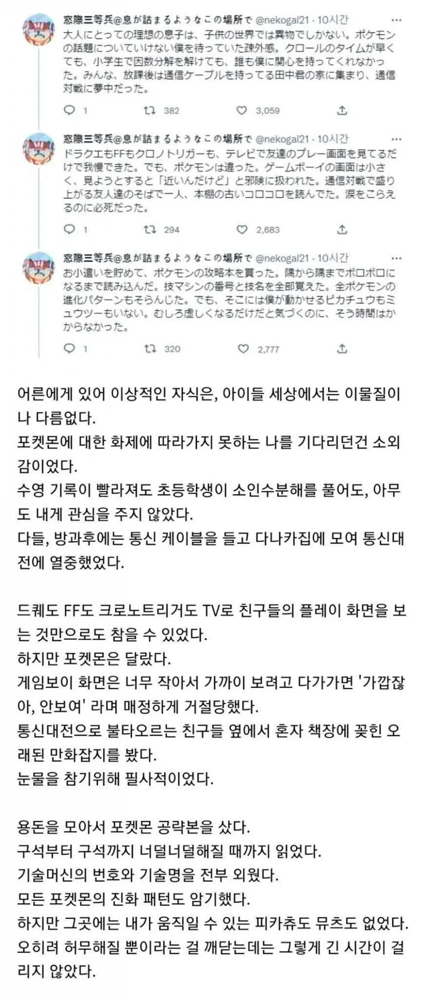
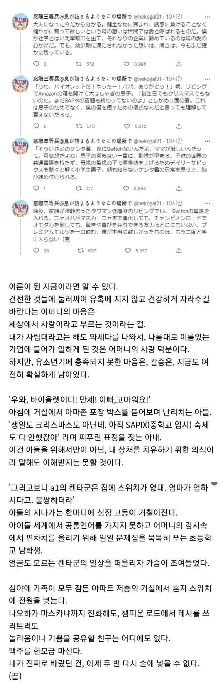

이제 난 저런 결핍도 잠깐인거 같고, 롱런할수 있는 보편타당한걸 해놓을걸 하는 생각이 듬
피아노, 수학, 운동, 다정함, 인내
같은 남은 인생에 더 도움되는걸 더 일찍 체득해놓을걸 하는 생각이 남
나도 피아노 어릴 때 배워놓을껄...
싶지만
나 초딩 때 엄빠가 바이엘4까지 해도 재미없음 그만두자~해서 진짜 열심히 바이엘4 딱 하고 이제 그만 둔다 했단 말이지
그 정도로 하기 싫었던거 생각하면 안 하는게 맞는거 같기도 함ㅋㅋㅋ
나도 초딩 때 체르니 100 칠 때 너무 재미없어서 어머니께 더 이상 못다니겠다고 그만 둔다 했었는데 지금 생각해도 딱히 후회되지는 않음. 어차피 내 성격상 집에다 피아노 두고 치진 않았을 것 같아서 ㅋㅋㅋ
그니까ㅋㅋㅋ
지금 어른 된 후에야
어릴 때 피아노 배우고 미술도 배우고 그럴껄....그러지
어릴 땐 피아노는 노잼이지ㅋㅋ
ㄹㅇ 게임은 나이 때에 맞게 친구들이랑 같이 하던지 해야 재밌지 나이 다 들어서 시작할려고 하면 여럿이 해도 어릴 때의 그 기분이 안남.
저때 뭐 게임했으면 나비효과처럼 취업실패히고 히키코모리 되는 평행세계가 있을지도 모르지 뭐
이래서 학군학군 하는거구나
좆소들어가서 머슴살이하면서 노예처럼 부려지다가 장애 생기고 산재도 못받고 버려져야
아 그때 포켓몬 하지말고 공부 열심히 할걸... 싶을수도 있음 ㅎㅎ
어릴때 포켓몬 좀 했다고 좆소갈 수준이면 포켓몬 안해도 좆소갈듯
포켓몬 좀하는게 아니고 쟤는 밥먹고 공부만 하는수준으로 공부하고 와세다 갔는데 남들 놀거 다놀면서 살고싶었다고하잖아ㅎㅎㅎ
뭔 개병신들이 개좆같은 소리하고있네 댓글들 진짜
씨발 니들은 절대 결혼하지마라 진심으로
뭔 애가 포켓몬스터 게임한다고 대학을 못가냐?
누가보면 마약하는지 알겠네 머저리새끼들 진짜
게임한다고 대학못가는 그런 애였으면 니새끼들 대갈빡이 든게없어서 못가는거야
니들이 무식해서 애한테 공부를 알려주기는 커녕 방향조차도 못알려줘서 그런거라고
이걸 애기탓을 하네 머가리 텅텅 빈 새끼들이
공부는 안하고 게임은 해본 틀딱들이라 그럼ㅋㅋ
나도 그래서 지금 애들이랑 뒤늦게산 스위치2로 포켓몬 소드 스칼렛 플레이 했는데, 좋더라. 사실상 내가 플레이 하고 글 읽어주는 역이었는데, 혹시라도 나주엥 하고 싶다 할까봐 팩은 안팔고 보관중 ㅋㅋ
내가 비슷한 과정을 겪어서 공감이 감.
내가 공략집을 너무 열심히 읽어서 내가 게임 많이 해본 줄 아는 친구도 있었음 ㅋㅋ.
게임기 한번 친구들한테 빌리는데 어찌나 박하게들 굴던지 서러우면서도 기쁘던 그 순간의 감정이 아직 남아있음.
지금은 그거 맘껏 해봐도 크게 재미가 없더라. 제일 재밌을 때 라는게 있는거겠지.
그때가 제일 머릿속에 쏙쏙 잘 들어올 때라서 아깝다 생각하는 부모님을 이해는 함.
피아노 미술 태권도 공부 각종 학습지 ㅋㅋ....
개드립 연령대 뭐야... 다 너 잘되라고 그러는거야 내 나이 돼보면 알아 이거 완전...
어릴때 비슷한 경험이 있어 돈 벌기 시작하고 나서는 게임엔 돈 안아끼게 되더라..
삼다수부터 플스4 스위치 플스5 스위치2 계속 사도 채워지지 않는게 있음